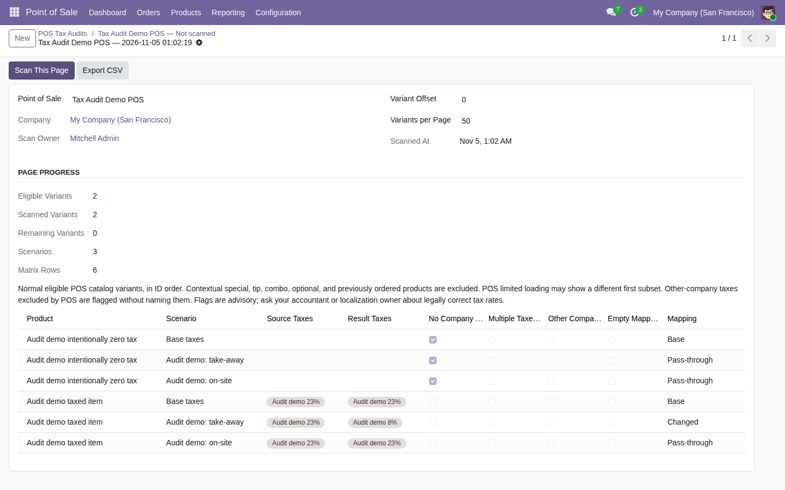

Review the normal POS catalog's company taxes and configured fiscal-position mappings before opening a till. Manager-only, read-only, bounded pages and CSV export.
Flags are advisory. Ask your accountant or localization owner about legally correct tax rates.
